FitBank · EasyCrédito · 2023 – 2024
Evolução do Digital Banking em mobile e web e criação do CUBE, o UI kit que se tornou a base visual do FitBank.
01 — Visão geral
O FitBank é uma infratech que oferece infraestrutura financeira para empresas criarem produtos e serviços digitais. Entrei pela EasyCrédito, no período em que ela foi adquirida pelo FitBank, e passei a atuar na evolução do ecossistema.
Meu principal produto foi o Digital Banking, a experiência bancária em mobile e web — criando novas funcionalidades e organizando uma base que já existia, mas ainda não estava documentada.
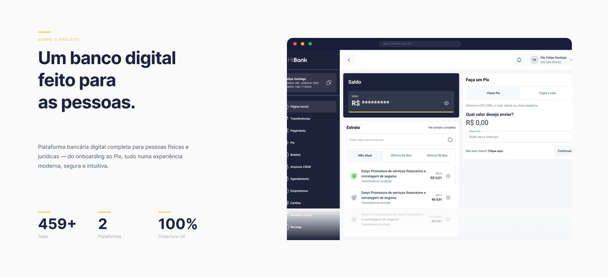
02 — Desafio
A versão web tinha funcionalidades e interfaces sem documentação comum, e a expansão do banco exigia novas jornadas com alto nível de clareza. Sem componentes e regras compartilhadas, cada entrega aumentava o risco de divergências entre design e desenvolvimento.
O desafio era evoluir o produto e, ao mesmo tempo, construir a estrutura para continuar evoluindo com velocidade.
03 — Meu papel
Meu cargo oficial era Senior UX Designer, mas atuei como Principal Designer e único responsável pelo design da frente.
Centralizei as decisões de produto e de linguagem visual — cores, tipografia, escalas, dispositivos, organização dos arquivos, interfaces, documentação, handoff, testes e padrões de trabalho. Web design e comunicação visual também faziam parte do escopo.
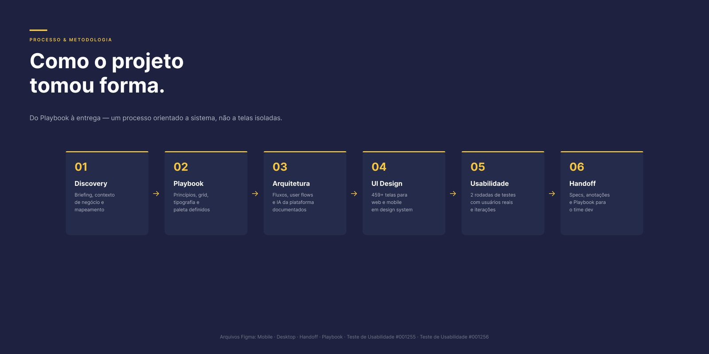
04 — Contribuições
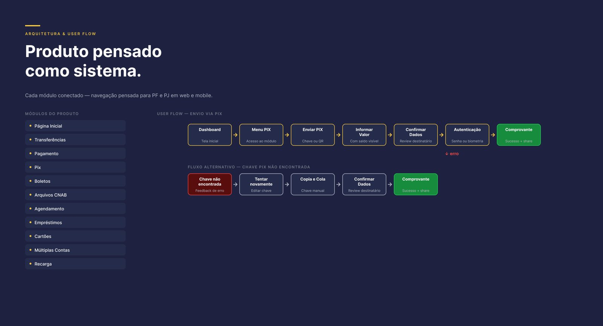
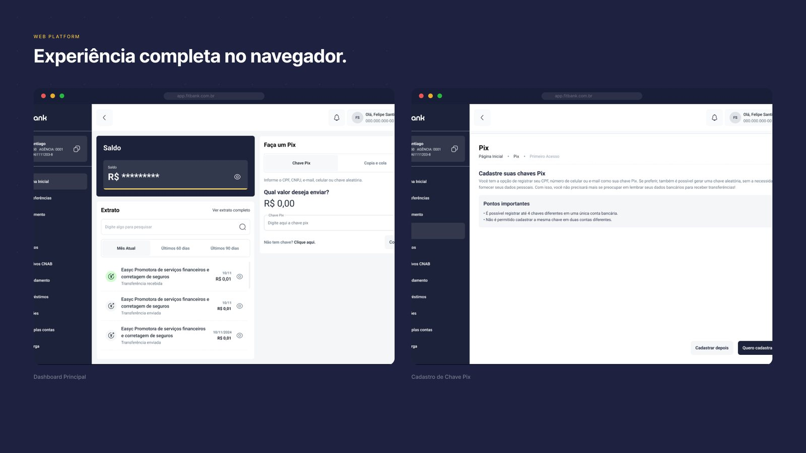
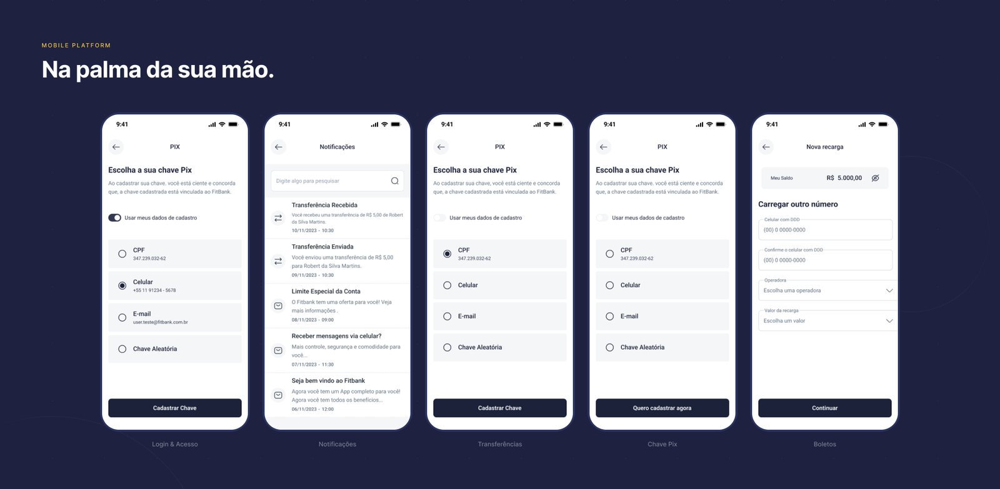
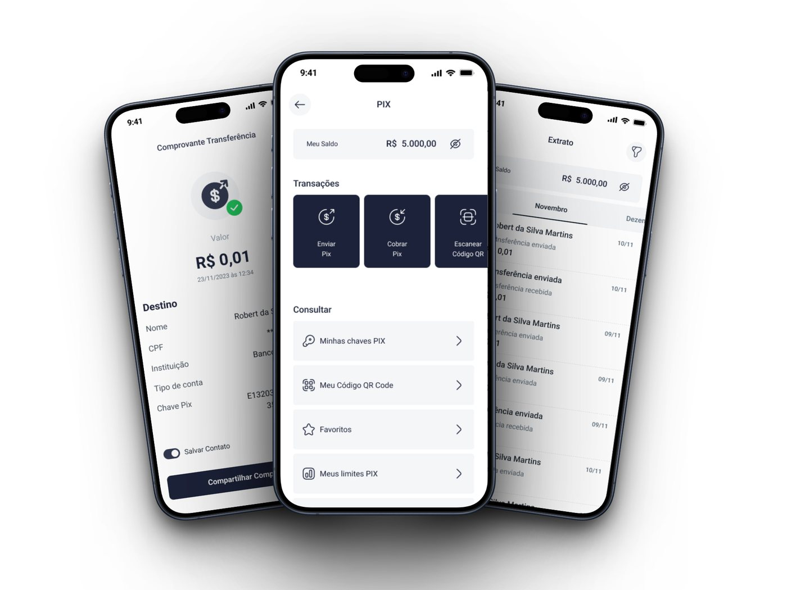
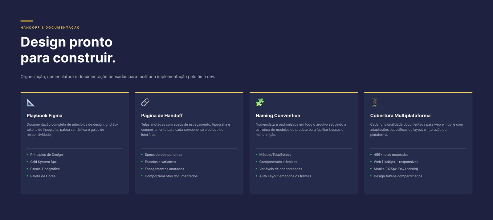
05 — Usabilidade
Duas rodadas de testes de usabilidade com usuários reais (#001255 e #001256) geraram iterações diretas no produto:
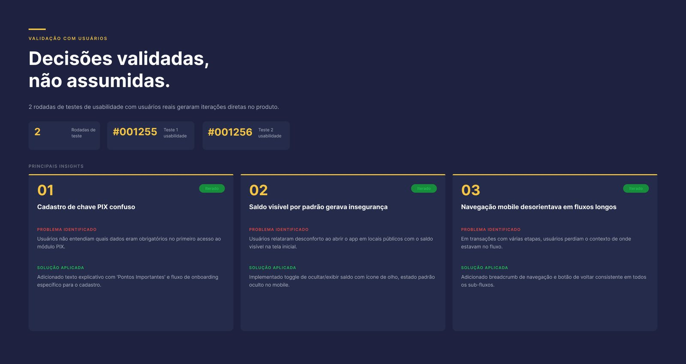
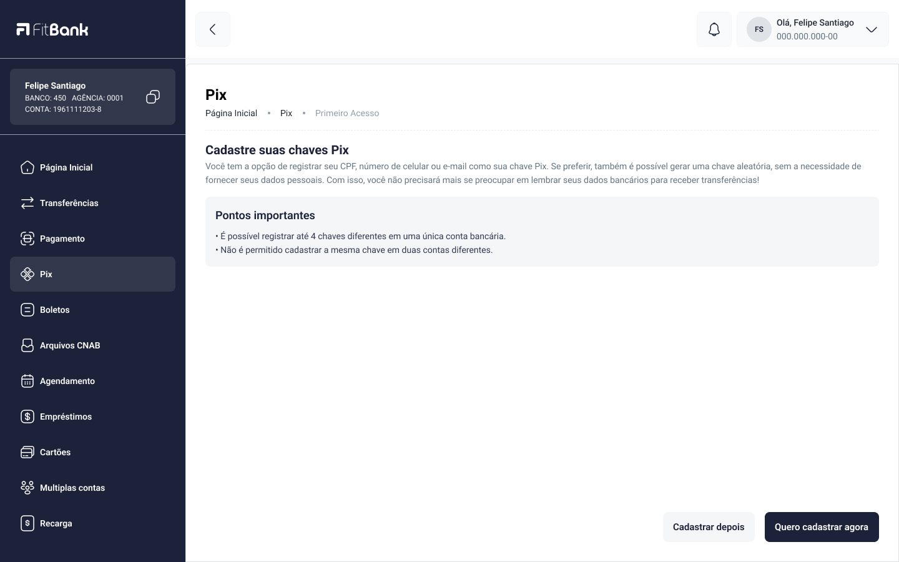
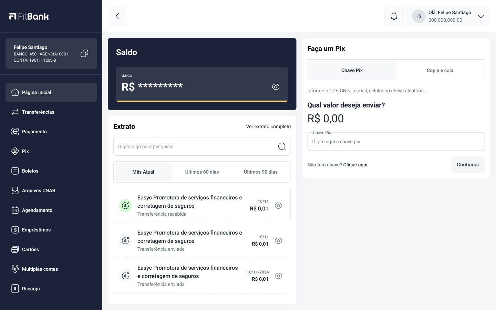
06 — O legado
O CUBE nasceu da necessidade de alinhar produto, design e desenvolvimento. Ele consolidou a identidade do FitBank e transformou decisões isoladas em componentes e padrões compartilhados.
O playbook completou essa base explicando não só quais elementos usar, mas como organizar o trabalho e tomar decisões de interface. Esse conjunto permitiu que o trabalho continuasse depois da minha saída, preservando decisões e reduzindo a dependência de conhecimento individual.
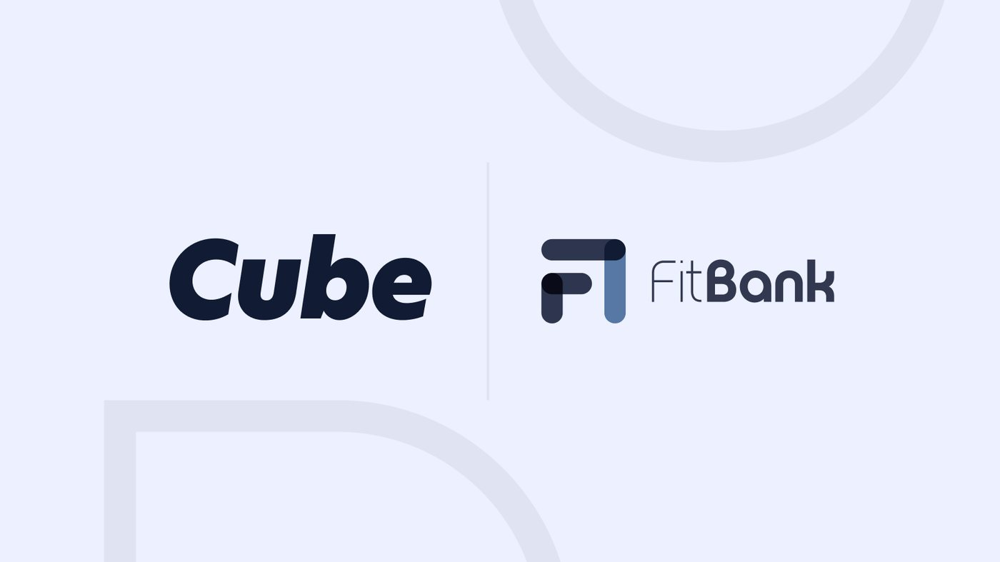
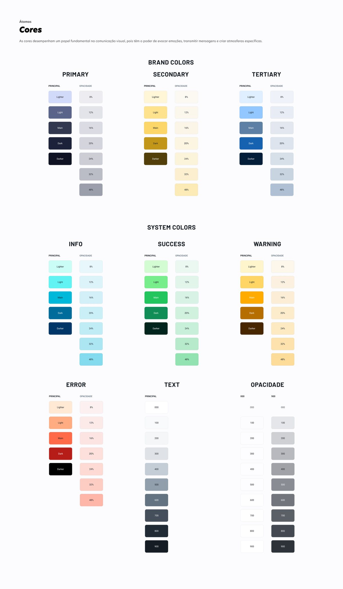
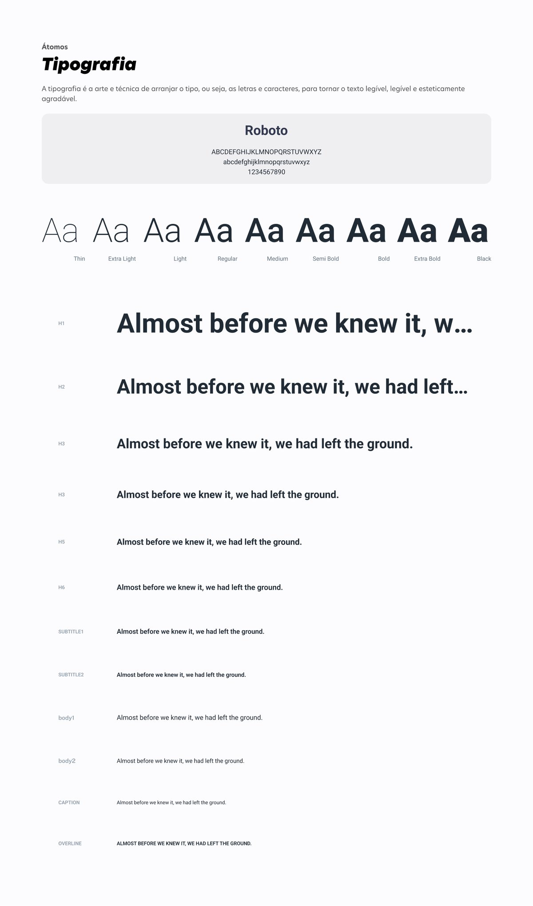
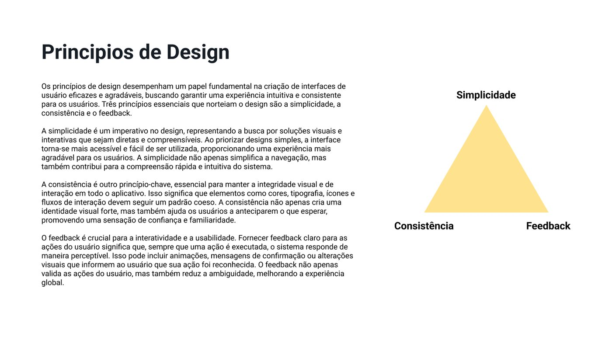
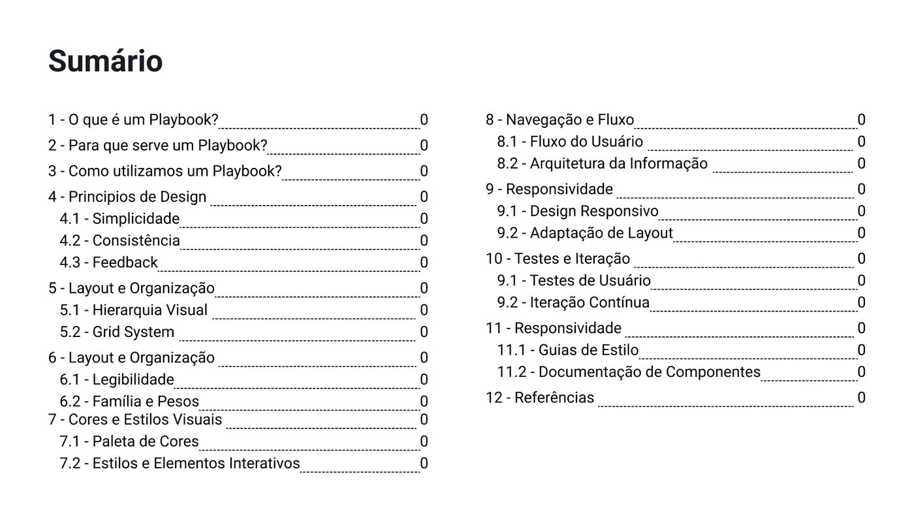
07 — Resultados
O maior resultado não foi entregar novas funções bancárias: foi transformar um conjunto de telas em um sistema coerente, documentado e capaz de continuar crescendo.